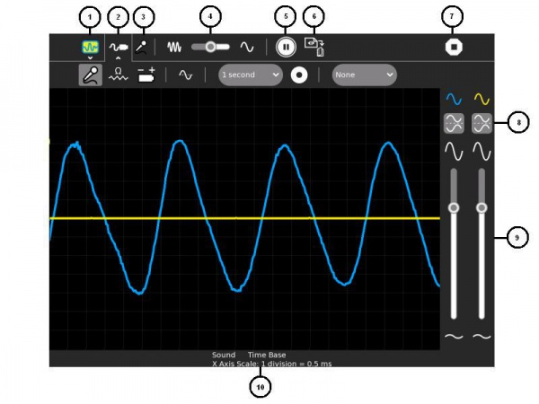

Measure¶
About¶
This Activity draws a picture of the sound heard by the internal microphone or of the signal present on the microphone socket. More specifically it draws a graph of this input versus time, the input is on the vertical axis and time is on the horizontal axis. That is, the laptop functions like a machine called an oscilloscope.
As well as graphing signal as a function of time, Measure can also graph as a function of frequency.
The XO-1 laptop is only capable of mono input, the XO-1.5 and XO-1.75 are capable of stereo input on their microphone socket and can graph two signals at once.
Where to get Measure¶
Measure activity is available for download from the Sugar Activity Library: Measure
The source code is available on GitHub.
Using¶

Select secondary toolbar - allows the Activity’s Journal entry to be renamed
Select secondary toolbar - measurement settings
The selected input type - Sound (AC voltage), resistance or DC voltage
The time scale
Freeze the display
Capture sample now - saves an image of the wave in the Journal
Stop - exits the Activity
Invert - invert the display
Use these sliders to control the sensitivity
The settings that are selected
The secondary toolbar - measurement settings
Sound - use this setting with the internal microphone, external microphone and external AC signals
Resistance sensor - use with external resistive type transducers
Voltage sensor - use with external sensors which generate a voltage
Time base/frequency - graphs the signal vs. time or graphs amplitude vs. frequency
Sample interval - a text file ‘Measure Log’ is saved to the journal, it contains one sample per interval
Starts/stops saving a text file ‘Measure Log’ with measured values as readable text
This feature is not working well in version 36, the intention is to synchronize the sample period to the waveform so that the sample will start on a rising edge or falling edge
Applying¶
Let the children experiment with the internal microphone, try singing, whistling, musical instruments, the Tam Tam musical Activity. The Turtle Blocks Activity can generate an audio tone, see the Python Block.
The children should learn through guided discovery that:
sound is a pressure wave
the pitch of the sound is determined by the frequency or cycles per second (Hz)
the loudness of a sound is determined by the amplitude
sounds contain multiple frequency components or harmonics
the more pure sounds have less harmonics
Extending¶
Measure is able to take input from a wide range of external sensors including switches, photocells, temperature sensors, inductive loops, hall effect sensors, soil probes and many more.
Care should be taken not to exceed the allowable input voltage:
XO-1 -0.5 V to 5 V
XO-1.5 -6 V to +9 V
XO-1.75 -6 V to +9 V
It is a good idea, particularly on the XO-1, to put a resistor of 680 ohms in the phono plug, this increases the allowable input voltage range.
You can find ideas for fun science experiments at http://wiki.sugarlabs.org/go/Activities/TurtleArt/Using_Turtle_Art_Sensors and http://wiki.laptop.org/go/Measure
Where to report problems¶
Please report bugs and make feature requests at Measure/issues.